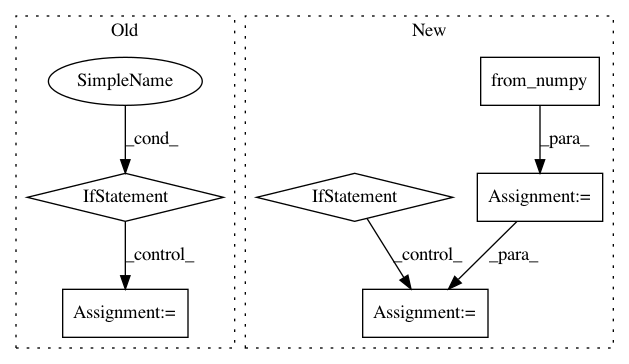

9b9a42de05056b418f98e3635f2cffd747123548,art/classifiers/pytorch.py,PyTorchClassifier,class_gradient,#PyTorchClassifier#Any#Any#,114
Before Change
:rtype: `np.ndarray`
// Compute the gradient and return
if logits:
grds = self._sess.run(self._logit_class_grads, feed_dict={self._input_ph: inputs})
else:
grds = self._sess.run(self._class_grads, feed_dict={self._input_ph: inputs})
grds = np.swapaxes(np.array(grds), 0, 1)
return grds
After Change
:rtype: `np.ndarray`
// Convert the inputs to Tensors
x = torch.from_numpy(inputs)
x.requires_grad = True
// Compute the gradient and return
// Run prediction
preds = self._forward_at(x, self._logit_layer)
if not logits:
preds = torch.nn.Softmax()(preds)
// Compute the gradient
grds = []
self._model.zero_grad()
for i in range(self.nb_classes):
x.grad.data.zero_()
In pattern: SUPERPATTERN
Frequency: 3
Non-data size: 6
Instances
Project Name: IBM/adversarial-robustness-toolbox
Commit Name: 9b9a42de05056b418f98e3635f2cffd747123548
Time: 2018-05-16
Author: M.N.Tran@ibm.com
File Name: art/classifiers/pytorch.py
Class Name: PyTorchClassifier
Method Name: class_gradient
Project Name: open-mmlab/mmdetection
Commit Name: e421e832883241bd7831bf77dc31d5fb31d7da58
Time: 2019-04-06
Author: chenkaidev@gmail.com
File Name: mmdet/ops/nms/nms_wrapper.py
Class Name:
Method Name: nms
Project Name: dpressel/mead-baseline
Commit Name: 2eb4c5f77bd8da9b1e23851b0acb84543e442953
Time: 2018-09-24
Author: dpressel@gmail.com
File Name: python/baseline/pytorch/classify/model.py
Class Name: WordClassifierModelBase
Method Name: make_input